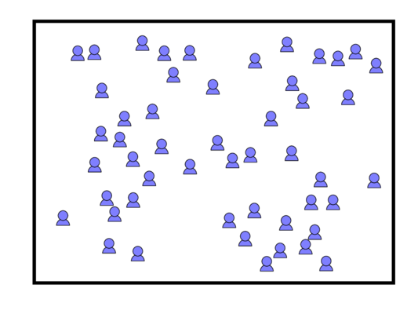
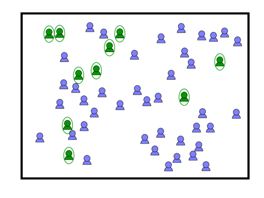
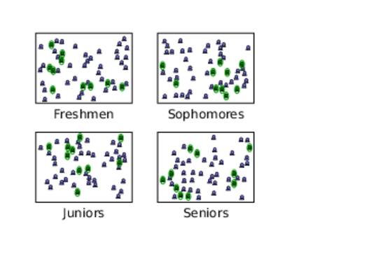

Random sampling
STA 150, Marshall University
Anna Mummert
Random sampling
This lesson is about ways to create a random sample
from a population.
This topic is part of experimental design, which
refers to the process
of designing a statistical study so
that the results will be meaningful.
Convenience sampling
The easiest way to make a random sample is to use
a sample that is easy to collect.
This is called convenience sampling.
- In order to study student preferences about their classes,
I only interview students that are in my classes.
- In order to measure the prices of soft drinks,
I drive to the closest Wal-Mart and write down
their prices.
Convenience sampling is also called opportunity sampling.
Simple random sampling
In simple random sampling, each member of the population
has the same chance of being chosen.
Suppose we have a population of 50 students and
we want to select 10.

Simple random sampling
Here is one possible selection of 10 individuals.

There are many other choices of 10 individuals.
The important point
is that everyone had the same chance of being selected.
Methods for random sampling
It is not possible to make random samples by
choosing the sample yourself.
You need to use a better method.
- Put each person's name on a piece of paper, place the
papers in a bag or box, and select the appropriate number.
- Use a computer or table to assign each person in the
population a number between 1 and 100, and then select a set
of numbers to get the right number of people in your sample.
- Take a set of note cards. Mark some with an X and leave
the rest blank. Shuffle the note cards and give one to
each person. The people with a marked card are the ones
in the sample.
- There are many other methods that will work, as well
Stratified sampling
Because we don't control who is selected in a simple random
sample,
the sample will represent the overall
population, but it may not represent
any
particular subpopulation.
If we select 400 Marshall students at random, we are not
likely to get 100 Freshman,
100 Sophomores, 100 Juniors, and
100 Seniors.
Stratified sampling divides the population into groups
and takes a random sample from each group.

Cluster sampling
Cluster sampling is a different way to make a sample
when the population is divided into groups.
In cluster sampling, we select some of the groups, and then
the sample consists of all the individuals who are in the selected
groups.
For example, we might select 8 classes at Marshall and then
interview all of the students in each of the classes.
Stratified vs. cluster
sampling
There is an important difference between stratified and
cluster sampling.
- In stratified sampling, we take a separate
random sample from every group.
- This is most useful when we want to ensure that our
sample contains a sufficient number of people from
each group.
- For example, a medical study might want to
include both women and men, or both old and young
people.
- A study at Marshall might want to include
students from all the colleges.
- In cluster sampling, we select some of the
groups, and the sample consists of every member of these
groups.
- This is most useful when the groups
are separated by time or distance.
- For example, we might want to
interview residents at several nursing homes. If it is
too difficult to travel to too many nursing homes, a
cluster sample might reduce our travel time.
- We need to ask if the groups selected are representative
of the overall population.
Check your understanding
Identify which type of sampling is being described.
- 20 Marshall students are selected for a survey by
randomly choosing their names from the list of enrolled students.
- Assuming each student has the same chance of being selected, this is a simple random sample.
- I measure student satisfaction with the cafeteria by
going there one Tuesday and asking the people I see to
complete a survey.
- This is a convenience sample.
- The state studies elementary schools by sending a team
to visit 15 different schools across the state. The team then
evaluates the records of all students at each of the schools.
- This is a cluster sample.
- The state studies elementary schools by randomly
selecting 10 students from every school in the state, and
then evaluating the records of the selected students.
- This is a stratified sample.
Systematic sampling
A different kind of sampling is often used for quality control.
Imagine that many items are being produced on an
assembly line.
In systematic sampling we select our sample items at a
fixed rate.
- We may select every 100th item, or every 10,000th item.
- We may select one item every half hour, or every hour,
or every day.
For example, a soda factory may select every 5,000th bottle
to inspect for quality control.
Multistage sampling
Multistage sampling uses a combination of several sampling
methods.
For example, if we want to study the WV school system,
we might:
- First select 30 schools at random
- Then select 10 classes from each of those schools at random
- Then select all students from each of those classes
The field of experimental design studies the best ways
to design these studies.
Goals of this lesson
- Understand the role of random sampling in statistics
- Define and identify convenience sampling
- Define and identify simple random sampling, stratified
sampling, and cluster sampling
- Select ways to collect a simple random sample
- Define and identify multistage sampling
- Define and identify systematic sampling
Reading
Textbook section 1.2: Data, Sampling, and Variation in Data and Sampling